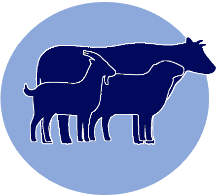

MATERIAL DIDÁCTICO · SECCIÓN I

Un curso para comprender la investigación animal
Ciencia Animal a través de los Datos
Exploración, análisis y razonamiento estadístico con R.
Comprender · Simular · Analizar · Interpretar
Primer encuentro con los datos
En esta primera sección aprenderemos a construir bases de datos, reconocer variables y describir su variabilidad. Utilizaremos ejemplos de becerros y corredores, con prácticas guiadas en R, gráficos y actividades de interpretación. El contenido se organiza en dos capítulos que suman 14 horas de trabajo.
CAPÍTULO 1 · 6 HORAS
Nuestros primeros pasos en R
Objetos, vectores, matrices, funciones, variables y construcción de una base con 15 becerros.
Leer capítulo →CAPÍTULO 2 · 8 HORAS
¿Qué nos dicen nuestros datos?
Media, mediana, variabilidad, gráficos, valores atípicos y descripción de tratamientos.
Leer capítulo →Cómo utilizar el material. Lee las definiciones, copia cada bloque de R, ejecútalo en RStudio y compara tus resultados con los ejemplos. Los scripts y bases de datos están disponibles en la sección de recursos.
Comenzar la Sección I